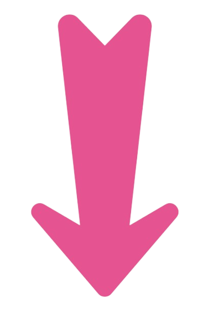
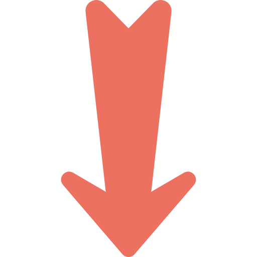

Cartographiant l'avenir par le code
Développeuse Web en formation
En reconversion vers la Géomatique...

Salut,
je m'appelle
Sandrine
Développeuse Full Stack en formation DWWM, Bac+2
En pleine reconversion professionnelle, j'ai choisi de me réorienter vers ce qui me passionne vraiment : la Géomatique et les SIG. Je mets tout en œuvre pour y parvenir — aujourd'hui en formation Développement Web full‑stack chez Garage404/ à Saint‑Étienne, je construis les bases techniques solides qui me permettront d'intégrer en septembre 2026 l'IUT d'Auch‑Toulouse — idéalement en alternance — pour me spécialiser pleinement dans ce domaine.

Parcours professionnel
Mon
histoire
De soignante à développeuse · Saint-Étienne
.png) Javascript
Javascript
 Tailwind CSS
Tailwind CSS
 HTML
HTML
 CSS
CSS
 Symfony
Symfony
 PHP
PHP
 MySQL
MySQL
 Figma
Figma
Mes Projets
Prenons contact !
chateauneufsandrine188@gmail.com